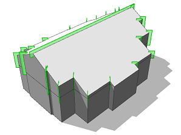

roofRidge operation
Syntax
roofRidge(valueType, value)
Parameters
- valueType (selector)
byAngle, byHeight Type of roof generation - value (float)
Angle or height of the roof-planes as specified by valueType.
Description
The roofRidge operation builds a roof perpendicular to each face of the current shape's geometry. In contrast to the roofHip operation and the roofGable operation only one ridge is constructed. On arbitrary shapes no hips or gables are created but the shape outline becomes part of two angled roof planes.
The ridge is oriented wrt. the x-axis of the scope. Namely, the resulting ridge is parallel to the scope's x-axis projected to the face plane. To orient the ridge align the scope using operations like alignScopeToGeometry, alignScopeToGeometryBBox or rotateScope.
The connectivity of the roof mesh is optimized for trim plane generation to cut bricks inserted into the roof planes (see examples below).
Scope
The scope orientation is set in the following way:
- x-axis direction is kept as much as possible (old x-axis is projected to the plane of the first face)
- y-axis along the face normal of the first face
- z-axis normal to the two above
The scope's sizes are adjusted to tighly fit the extruded geometry.
Related
- envelope operation
- extrude operation
- offset operation
- roofGable operation
- roofHip operation
- roofPyramid operation
- roofShed operation
- taper operation
Examples
Scope and trim planes
Lot --> extrude(10) Mass
Mass --> comp(f) { top : Top | side = Sides. }
Top --> roofRidge(byAngle, 30) Roof
A roof with roof slope 30 degrees is built on top of an extruded lot. Note the setting of the pivot and scope.
|
|
 |
Roof --> set(trim.horizontal, true)
comp(f) { all : Face. }
After a component split, each roof face contains trim planes to cut bricks on insertion.
Note that per default there are no horizontal trim planes at the ridges. To enable them, set(trim.horizontal, true) is used in front of the component split (details). |
Ridge orientation
Lot --> extrude(10) Mass
Mass --> comp(f) { top : Top | side = Sides. }
Top --> alignScopeToGeometryBBox(xy)
roofRidge(byAngle, 30)
The scope is aligned to the top face using alignScopeToGeometryBBox with the xy selector. As a result the x-axis of the scope is the longer extent of the minimum area bounding rectangle. The resulting ridge is oriented "along" the shape.
|
|
Top --> alignScopeToGeometryBBox(yx)
roofRidge(byAngle, 30)
Using a different selector yx will align the scope such that the scope x-axis is the shorter extent. The resulting ridge is oriented "across" the shape.
|
|
Top --> alignScopeToGeometryBBox(xy)
rotateScope(0, 0, 45)
roofRidge(byAngle, 30)
The scope is rotated by 45 degress. The resulting ridge is oriented "diagonally" to the shape.
|
Copyright ©2008-2022 Esri R&D Center Zurich. All rights reserved.